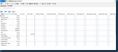
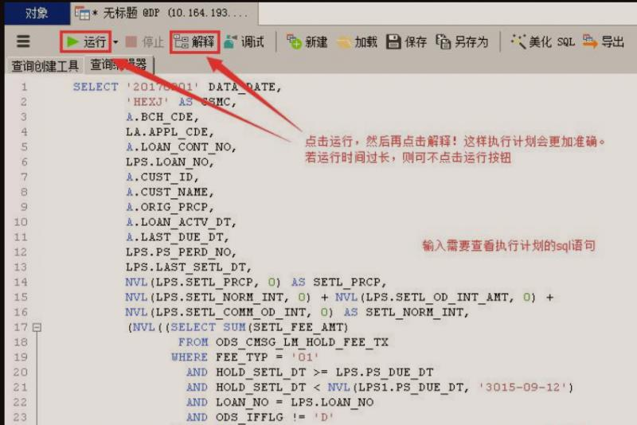

原文连接:https://www.cnblogs.com/chen-chen-chen/p/11641458.html
引言：
实际项目开发中，由于我们不知道实际查询的时候数据库里发生了什么事情，数据库软件是怎样扫描表、怎样使用索引的，因此，我们能感知到的就只有
sql语句运行的时间，在数据规模不大时，查询是瞬间的，因此，在写sql语句的时候就很少考虑到性能的问题。但是当数据规模增大，如千万、亿的时候，我们运
行同样的sql语句时却发现迟迟没有结果，这个时候才知道数据规模已经限制了我们查询的速度。所以，查询优化和索引也就显得很重要了。
问题：
当我们在查询前能否预先估计查询究竟要涉及多少行、使用哪些索引、运行时间呢？答案是能的，mysql提供了相应的功能和语法来实现该功能。
分析：
1、MySQL语法
MySql提供了EXPLAIN语法用来进行查询分析，在SQL语句前加一个”EXPLAIN”即可。
默认情况下Mysql的profiling是关闭的，所以首先必须打开profiling
set profiling="ON"
mysql> show variables like "%profi%";
+------------------------+-------+
| Variable_name | Value |
+------------------------+-------+
| profiling | ON |
show processlist; 查看现在在运行的所有进程列表，在进程列表中我们唯一需要的是ID
mysql> show processlist;
+----+------+----------------+-----------+---------+------+-------+-------------
-----+
| Id | User | Host | db | Command | Time | State | Info
|
+----+------+----------------+-----------+---------+------+-------+-------------
-----+
| 3 | root | localhost:2196 | click_log | Query | 0 | NULL | show process
list |
+----+------+----------------+-----------+---------+------+-------+-------------
mysql> show profile cpu,memory for query 3;
+--------------------+------------+----------+------------+
| Status | Duration | CPU_user | CPU_system |
+--------------------+------------+----------+------------+
| freeing items | 0.00001375 | NULL | NULL |
| logging slow query | 0.00001375 | NULL | NULL |
| cleaning up | 0.00000050 | NULL | NULL |
+--------------------+------------+----------+------------+
SHOW PROFILES Syntax:
SHOW PROFILE [type [, type] ... ]
[FOR QUERY n]
[LIMIT row_count [OFFSET offset]]
type:
ALL
| BLOCK IO
| CONTEXT SWITCHES
| CPU
| IPC
| MEMORY
| PAGE FAULTS
| SOURCE
| SWAPS
2、Navicat工具
打开profile分析工具：
i
查看是否生效：show variable like ‘%profil%’;
查看进程：show processlist;

选择数据库：use db_jiakao;
全部分析的类型：show PROFILE all;

查看表索引：show index from user_member;##查看表索引
使用explain命令查看query语句的性能：
EXPLAIN select * from user_feedback;##查看执行计划中的sql性能
第一个查询是全表扫描，第二个是索引扫描：
区别在于type:all是全表扫描 index 通过索引扫描
或者在查询中输入需要查看执行计划的语句，点击执行，然后点击解释。选择解释标签，就可以查看到sql的执行计划了

解释
1、ID、table
id：Query Optimizer 所选定的执行计划中查询的序列号；
table：显示这一行的数据是关于哪张表的
2、type
显示连接使用了何种类型，对表所使用的访问方式。从最好到最差的连接类型为const、eq_reg、ref、range、indexhe和ALL
说明：不同连接类型的解释（按照效率高低的顺序排序）
system：系统表，表中只有一行数据。这是const连接类型的特殊情况。
const ：读常量，且最多只会有一条记录匹配。表中的一个记录的最大值能够匹配这个查询（索引可以是主键或惟一索引）。因为只有一行，这个值实际就是常数，因为MYSQL先读这个值然后把它当做常数来对待。
eq_ref：最多只会有一条匹配结果，一般是通过主键或者唯一键索引来访问；在连接中，MYSQL在查询时，从前面的表中，对每一个记录的联合都从表中读取一个记录，它在查询使用了索引为主键或惟一键的全部时使用。
ref：Join 语句中被驱动表索引引用查询，这个连接类型只有在查询使用了不是惟一或主键的键或者是这些类型的部分（比如，利用最左边前缀）时发生。对于之前的表的每一个行联合，全部记录都将从表中读出。这个类型严重依赖于根据索引匹配的记录多少—越少越好。
range：索引范围扫描，这个连接类型使用索引返回一个范围中的行，比如使用>或<查找东西时发生的情况。
ref_or_null：与ref 的唯一区别就是在使用索引引用查询之外再增加一个空值的查询。
unique_subquery：子查询中的返回结果字段组合是主键或者唯一约束
index_merge：查询中同时使用两个（或更多）索引，然后对索引结果进行merge 之后再读取表数据；
index_subquery：子查询中的返回结果字段组合是一个索引（或索引组合），但不是一个主键或者唯一索引；
index：全索引扫描，这个连接类型对前面的表中的每一个记录联合进行完全扫描（比ALL更好，因为索引一般小于表数据）。
ALL：全表扫描，这个连接类型对于前面的每一个记录联合进行完全扫描，这一般比较糟糕，应该尽量避免。
3、possible_keys
显示可能应用在这张表中的索引。这里的索引名字是创建索引时指定的索引昵称；如果索引没有昵称，则默认显示的是索引中第一个列的名字。
如果为空，没有可能的索引，可以为相关的域从WHERE语句中选择一个合适的语句
4、key
实际使用的索引。如果为NULL，则没有使用索引。很少的情况下，MYSQL会选择优化不足的索引。这种情况下，可以在SELECT语句中使用USE INDEX（indexname）来强制使用一个索引或者用IGNORE INDEX（indexname）来强制MYSQL忽略索引
key_len
使用的索引的长度。在不损失精确性的情况下，长度越短越好
5、ref
显示的是列的名字，显示索引的哪一列被使用了，MySQL将根据这些列来选择行，如果可能的话，是一个常数 。
“对于每一种与另一个表中记录的组合，MySQL将从当前的表读取所有带有匹配索引值的记录。如果连接操作只使用键的最左前缀，或者如果键不是 UNIQUE或PRIMARY KEY类型（换句话说，如果连接操作不能根据键值选择出唯一行），则MySQL使用ref连接类型。如果连接操作所用的键只匹配少量的记录，则ref是一 种好的连接类型。”
6、rows
MYSQL认为必须检查的用来返回请求数据的行数 ，这里最理想的数字就是1。
7、select_type
所使用的查询类型，判断是否是复杂语句，主要有以下这几种查询类型
DEPENDENT SUBQUERY：子查询中内层的第一个SELECT，依赖于外部查询的结果集；
DEPENDENT UNION：子查询中的UNION，且为UNION 中从第二个SELECT 开始的后面所有SELECT，同样依赖于外部查询的结果集；
PRIMARY：子查询中的最外层查询，注意并不是主键查询；
SIMPLE：除子查询或者UNION 之外的其他查询；
** SUBQUERY：子查询内层查询的第一个SELECT，结果不依赖于外部查询结果集；
UNCACHEABLE SUBQUERY：结果集无法缓存的子查询；
UNION：UNION 语句中第二个SELECT 开始的后面所有SELECT，第一个SELECT 为PRIMARY
UNION RESULT**：UNION 中的合并结果；
8、Extra
关于MYSQL如何解析查询的额外信息。将在表4.3中讨论，但这里可以看到的坏的例子是Using temporary和Using filesort，意思MYSQL根本不能使用索引，结果是检索会很慢
说明：extra列返回的描述的意义
Distinct ：一旦mysql找到了与行相联合匹配的行，就不再搜索了。
Not exists ：mysql优化了LEFT JOIN，一旦它找到了匹配LEFT JOIN标准的行，就不再搜索了。
No tables：Query 语句中使用FROM DUAL 或者不包含任何FROM 子句；
Using filesort ：当我们的Query 中包含ORDER BY 操作，而且无法利用索引完成排序操
作的时候，MySQL Query Optimizer 不得不选择相应的排序算法来实现。看到这个的时候，查询就需要优化了。mysql需要进行额外的步骤来发现如何对返回的行排序。它根据连接类型以及存储排序键值和匹配条件的全部行的行指针来排序全部行。
Using index ：所需要的数据只需要在Index 即可全部获得而不需要再到表中取数据。列数据是从仅仅使用了索引中的信息而没有读取实际的行动的表返回的，这发生在对表的全部的请求列都是同一个索引的部分的时候。
Using temporary ：当MySQL 在某些操作中必须使用临时表的时候，在Extra 信息中就会
出现Using temporary 。主要常见于GROUP BY 和ORDER BY 等操作中。看到这个的时候，查询需要优化了。这里，mysql需要创建一个临时表来存储结果，这通常发生在对不同的列集进行ORDER BY上，而不是GROUP BY上。
Using where：如果我们不是读取表的所有数据，或者不是仅仅通过索引就可以获取所有需
要的数据，则会出现Using where 信息；
Where used ：使用了WHERE从句来限制哪些行将与下一张表匹配或者是返回给用户。如果不想返回表中的全部行，并且连接类型ALL或index，这就会发生，或者是查询有问题。
Using index for group-by：数据访问和Using index 一样，所需数据只需要读取索引即
可，而当Query 中使用了GROUP BY 或者DISTINCT 子句的时候，如果分组字段也在索引
中，Extra 中的信息就会是Using index for group-by；
Using where with pushed condition：这是一个仅仅在NDBCluster 存储引擎中才会出现
的信息，而且还需要通过打开Condition Pushdown 优化功能才可能会被使用。控制参数
为engine_condition_pushdown 。
Full scan on NULL key：子查询中的一种优化方式，主要在遇到无法通过索引访问null
值的使用使用；
Impossible WHERE noticed after reading const tables：MySQL Query Optimizer 通过
收集到的统计信息判断出不可能存在结果；
Select tables optimized away：当我们使用某些聚合函数来访问存在索引的某个字段的
时候，MySQL Query Optimizer 会通过索引而直接一次定位到所需的数据行完成整个查
询。当然，前提是在Query 中不能有GROUP BY 操作。如使用MIN()或者MAX（）的时
候；
Range checked for each Record（index map:#） ：没有找到理想的索引，因此对从前面表中来的每一个行组合，mysql检查使用哪个索引，并用它来从表中返回行。这是使用索引的最慢的连接之一。
总结
因此，弄明白了explain语法返回的每一项结果，我们就能知道查询大致的运行时间了，如果查询里没有用到索引、或者需要扫描的行过多，那么可以感到明显的延迟。因此需要改变查询方式或者新建索引。mysql中的explain语法可以帮助我们改写查询，优化表的结构和索引的设置，从而最大地提高查询效率。当然，在大规模数据量时，索引的建立和维护的代价也是很高的，往往需要较长的时间和较大的空间，如果在不同的列组合上建立索引，空间的开销会更大。因此索引最好设置在需要经常查询的字段中
参考：
https://blog.csdn.net/y41992910/article/details/79888276
https://www.cnblogs.com/xu-xiang/p/5833349.html